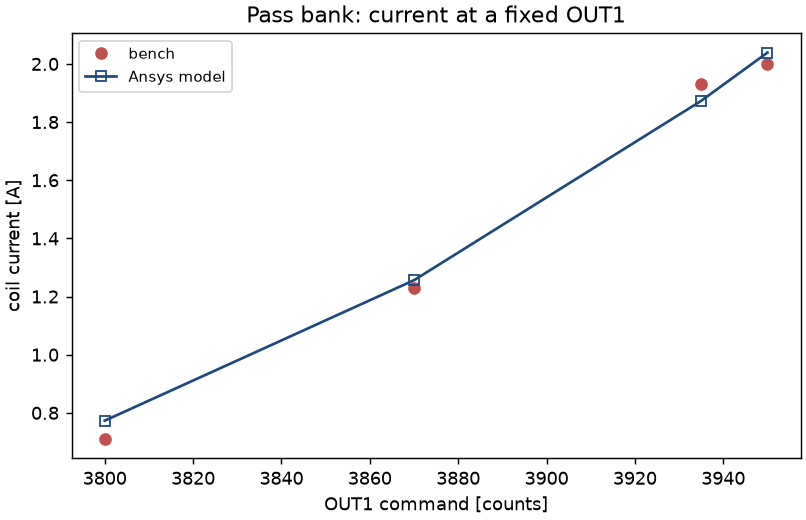
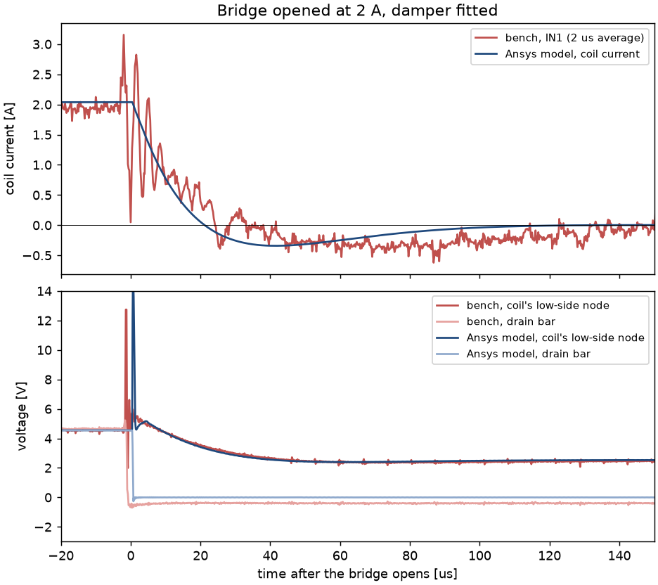
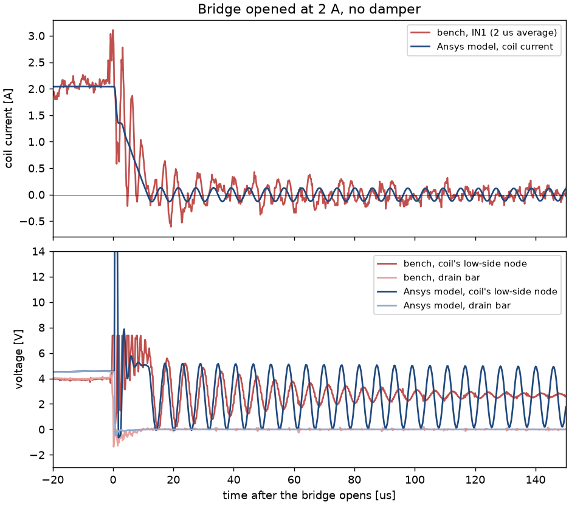
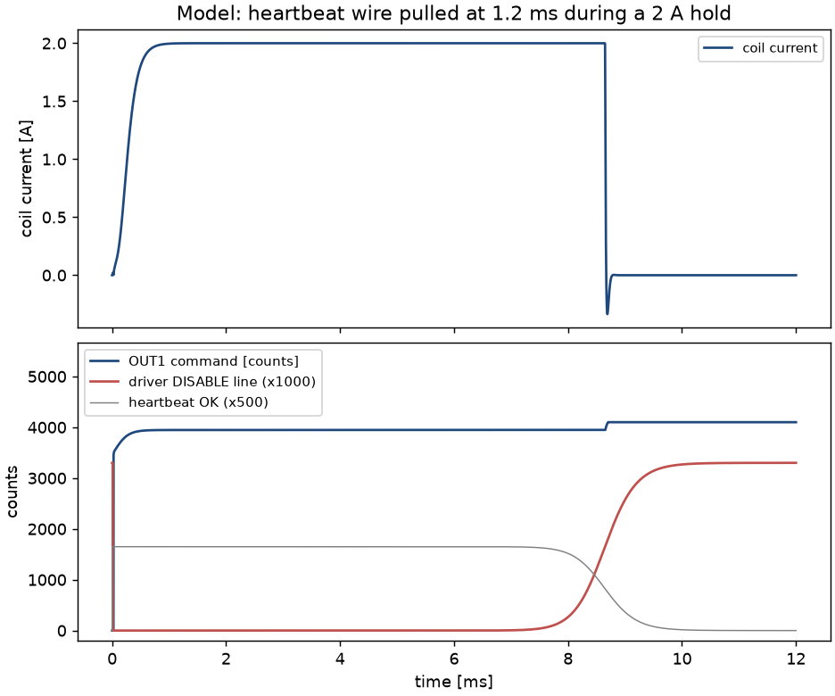
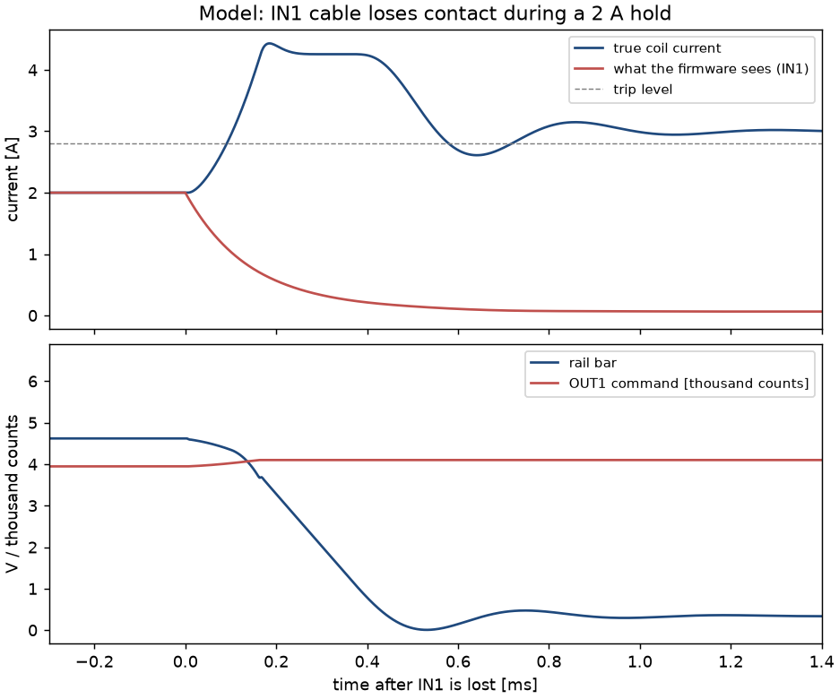

Model: ansys/coil_servo.aedt, design bench (3 A bench supply, 45 µH test coil, 3.2 Ω + 10 µF damper). Bench numbers: docs/benchtop_test_log.md and docs/lab_notes_2026-11.md (tests of 11-11 to 11-13). Regenerate with run_sims.py then compare.py.
| Test | Quantity | Ansys model | Bench | Note |
|---|---|---|---|---|
| Fixed OUT1 (open loop) | current at 3800 counts | 0.77 A | 0.71 A | bench 11-12, coil lifted |
| current at 3870 counts | 1.26 A | 1.23 A | bench 11-12, coil lifted | |
| current at 3935 counts | 1.87 A | 1.93 A | bench 11-12, coil lifted | |
| current at 3950 counts | 2.04 A | 2.0 A | ||
| rail bar at 2 A | 4.61 V | 4.60 V | supply leads drop 0.2 ohm x 2 A | |
| Fixed OUT1, damper removed | 10-20 kHz ringing at 1.9 A | none (0.0 mA p-p) | +-116 to +-165 mA at 12 kHz | NOT reproduced: the cause is not in this circuit model |
| OUT1 -> 0 at 2 A, bridge closed | time to zero current | 159 us | ~170 us | freewheel through the bridge diodes |
| fall rate | 12.9 mA/us | 12-13 mA/us | ||
| swing below zero (into the damper) | -0.09 A | ~ -0.2 A | bench: for ~100 us | |
| drain bar while the current falls | 5.52 V | ~5.9 V | rail + one diode drop | |
| drain bar peak at switch-off | 14.9 V | 12.1 V | model: the supply-lead inductance, caught by the 5KP12CA | |
| voltage across the coil while it falls | 0.47 V | 0.52 V | bench: 0.52 V and 13.3 mA/us give L = 37 uH | |
| OUT1 -> 0 at 1.5 A, no damper | time to zero / rate | 122 us / 12.5 mA/us | 100-160 us / 8-12 mA/us | Test 3f |
| Bridge opened at 2 A, damper fitted | time to zero current | 21 us | ~25 us | |
| swing below zero | -0.34 A | ~ -0.3 A | ||
| drain bar while the coil discharges | -0.00 V | ~ -0.5 V | model: the bank conducts backwards through its channel, hardly any drop | |
| Bridge opened at 2 A, no damper | time to zero current | 12 us | 10-13 us | |
| drain bar while the coil discharges | -0.06 V | ~ -0.5 V | model: the bank conducts backwards through its channel, hardly any drop | |
| rail bar jump | +25 V for < 1 us | +2.5 to +3.2 V for ~10 us | DISAGREES: see 'What does not match' below | |
| Controller on, step 0 -> 1 A | time to 90 % / 98 % | 0.74 / 1.05 ms | 0.61-0.73 / 0.81-1.04 ms | bench gains kp 31.2, ki 942 |
| overshoot | 0.0 % | 1-2.4 % | ||
| OUT1 at the hold | 3836 counts | ~3857 (fit) | ||
| Controller on, step 0 -> 2 A | time to 90 % / 98 % | 0.48 / 0.69 ms | 0.45-0.47 / 0.62-0.65 ms | bench gains kp 31.2, ki 942 |
| overshoot | 0.0 % | 1-2.4 % | ||
| OUT1 at the hold | 3946 counts | 3942-3952 | ||
| Setpoint 2 A -> 0 (zero snap) | time to 2 % (0.04 A) | 153 us | 130-140 us | rev 5 firmware |
| Step to 2.9 A, trip at 2.8 A | trip fires / peak current | yes / 2.81 A | yes / ~2.85 A | |
| Heartbeat wire pulled at a 2 A hold | bridge cut after the last heartbeat edge | 7.6 ms | 7.6 ms | monostable 220 kOhm / 100 nF |
| OUT1 afterwards | winds up to 4100 counts | 4100 (the clamp) | the firmware cannot see the safety board | |
| IN1 signal lost at a 2 A hold | peak coil current | 4.4 A | 4.7-5 A (11-12 surge) | supports the lost-IN1 explanation |
| rail sag | 4.6 -> 0.0 V | 4.3 -> 1.9 V | bench supply in current limit | |
| MOT PREDICTION: OUT1 -> 0, bridge closed | start current / time to zero | 86 A / 1.56 ms | (not built) repo model ~1.3 ms from 100 A | bank law extrapolated |
| drain bar peak | 19.1 V | - | 5KP12CA clamps | |
| MOT PREDICTION: bridge opened at current | start current / time to zero | 86 A / 175 us | (not built) offline estimate 182 us | |
| rail bar peak | 170 V | (not built) offline estimate 111-113 V | do not trust: the same model over-predicts this spike on the bench |

Current for a fixed OUT1 command (controller off). The model uses the bank law fitted to the 11-11/12 bench scans, so this mainly checks that the circuit around the bank is right.
OUT1 set to zero at 2 A with the bridge left closed: the coil current circulates through the bridge and dies away.

Bridge opened at 2 A, damper fitted: all four bridge switches turned off while current flows (what the safety board does).

Bridge opened at 2 A, no damper: all four bridge switches turned off while current flows (what the safety board does).

Setpoint steps with the controller on, bench gains (kp 31.2 counts/A, ki 942 counts/(A ms)).

Model only. The safety board opens the bridge 7.6 ms after the last heartbeat edge; the controller, seeing no current, turns OUT1 up to its clamp. Pressing reset now would re-close the bridge at full drive (the known operating rule).

Model only. With IN1 lost the controller sees the current fall and turns the bank up; the true current surges until the bench supply runs out. The trip cannot fire because it uses the same lost signal.

PREDICTION for the two MOT coils on the SE-600-5 (not built). The pass-bank law is extrapolated from 2.5 A to 100 A and the supply's output capacitance is assumed.